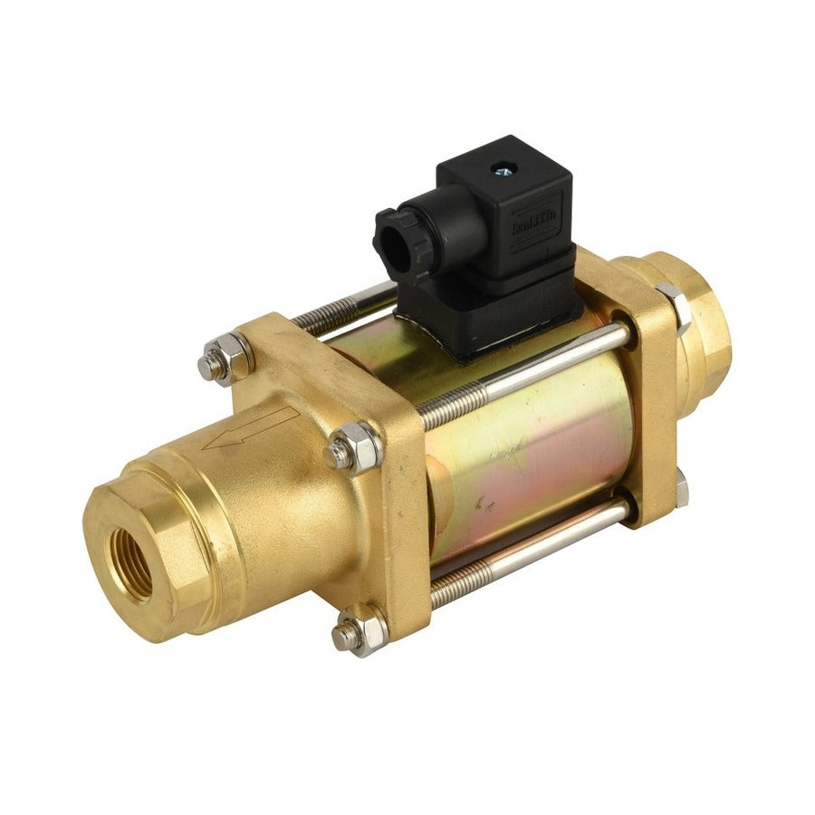

产品详情
核对参数、确认工况，即可直接发起询价或订购。

图片为该类产品的实物照片示意，实际外观与配置以双方确认的订货信息为准。
智能控制 · 定制选型
数显定时自动排水电磁阀
数显定时排水电磁阀把控制单元与阀体集成在一起，可按设定的开启时长与间隔周期自动排放冷凝水，减少人工巡检与忘记排水造成的积水问题。定时参数可按现场工况调整，也可按需求选配不同电压与接口。
产品类型定时控制一体式排水电磁阀
控制方式数显定时，可设定开启间隔与排放时长
阀体材质黄铜阀体，按配置确认
接口尺寸G1/2 英寸等，按现场管路确认
询价时请一并提供：介质类型、工作压力、介质温度、电源电压、接口尺寸、采购数量。信息越完整，选型与报价越准确。
SPECIFICATIONS
技术参数
下表为典型参考值，正式选型请以确认后的订货参数为准。
| 产品类型 | 定时控制一体式排水电磁阀 |
|---|---|
| 控制方式 | 数显定时，可设定开启间隔与排放时长 |
| 阀体材质 | 黄铜阀体，按配置确认 |
| 接口尺寸 | G1/2 英寸等，按现场管路确认 |
| 适用介质 | 冷凝水、压缩空气系统排水 |
| 工作压力 | 0 ~ 1.6 MPa（典型值，以配置为准） |
| 介质温度 | -5 ~ 80 ℃ |
| 工作电压 | AC220V / DC24V 可选 |
| 防护等级 | IP65（按配置确认） |
| 安装位置 | 储气罐、过滤器、干燥机底部排水口 |
| 选配项 | 手动测试按钮、过滤网、报警输出 |
| 交付方式 | 按参数确认后供货，支持批量订购 |
说明：不同电压、密封材质与接口配置会改变部分参数；如工况超出上表范围，请先联系我们确认可行性。
产品特点
- 定时自动排放，减少人工巡检与遗漏排水
- 开启间隔与排放时长可调，避免压缩空气浪费
- 控制与阀体一体集成，接线与安装简单
- 带手动测试功能，便于现场验证动作
- 可按电压、接口、压力范围做配置确认
- 适用于多台设备的批量改造与配套
典型应用
选型与订货须知
电磁阀选型需同时确认介质相容性、压差条件、电压制式与安装方向。先导式结构需要最小启动压差；介质含杂质时建议前端加装过滤器。本站不承诺具体交期与库存，相关信息以双方书面确认的订单为准。
带型号发起询价 →RELATED
相关产品